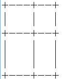
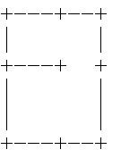

BZPRO
#4410. [Usaco2016 Feb]Fence in
内存限制：128 MiB
时间限制：10 Sec
提交
提交记录
讨论
题目描述
有一个平面，左下角是(0,0)，右上角是(A,B)。
有n个平行于y轴的栅栏a1..an，表示挡在(ai,0)到(ai,B)之间。
有m个平行于x轴的栅栏b1..bn，表示挡在(0,bi)到(A,bi)之间。
这样，平面被划成了(n+1)*(m+1)块。
现在要去掉某些栅栏的一部分，使得每一块都连通。
比如原来是这样：

可以去掉后变成这样：

求最少需要去掉多少长度的栅栏使得每一块都连通。
输入格式
第一行四个数A,B,n,m。
A<=1000000000 ,B<=1000000000 N<=25000 M<=25000
接下来n行每行一个数表示ai
接下来m行每行一个数表示bi。
0<ai<A 0<bi<B
输出格式
输出一个数表示答案。
样例
样例输入
15 15 5 2
2
5
10
6
4
11
3
样例输出
44
数据范围与提示